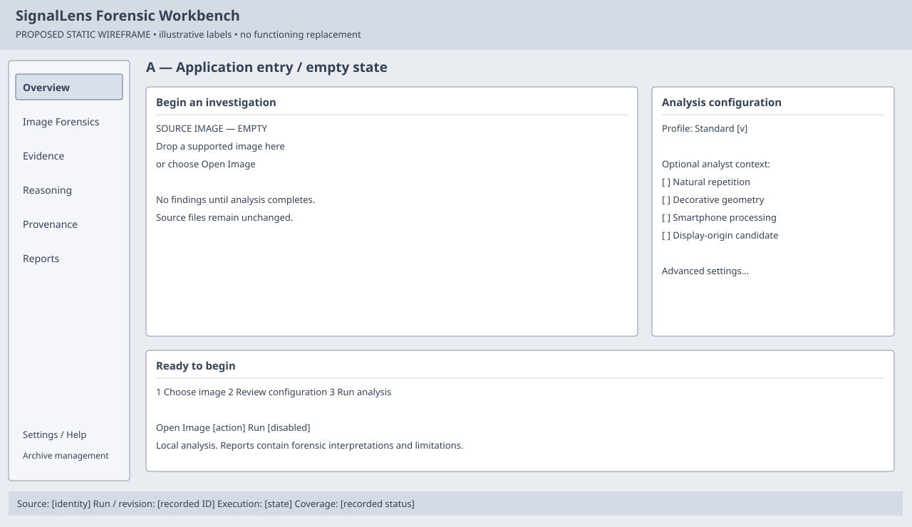
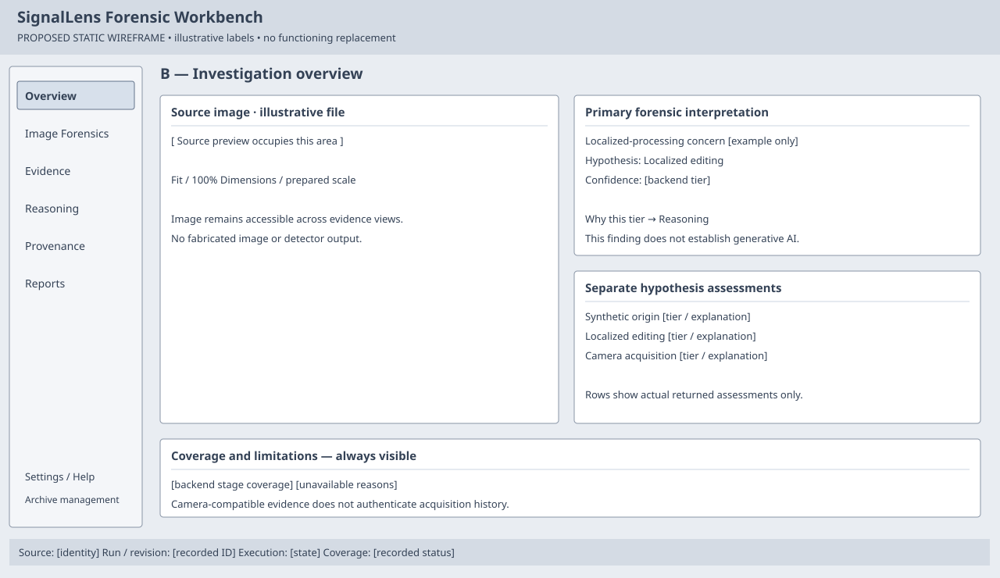
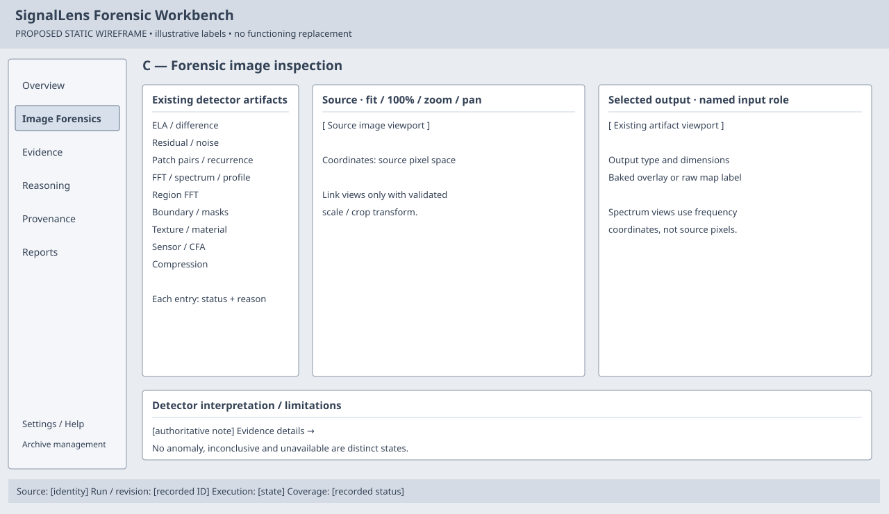
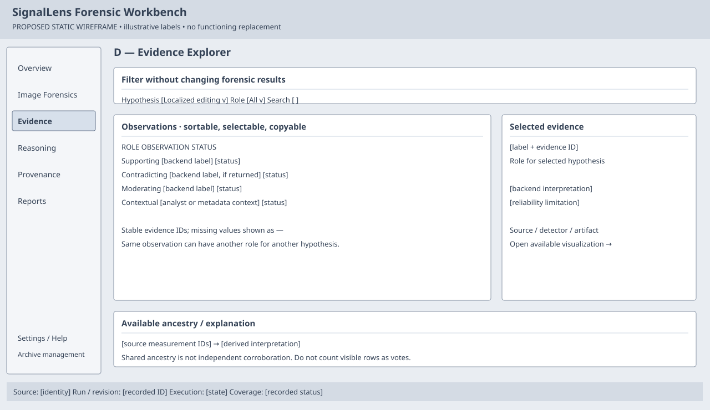
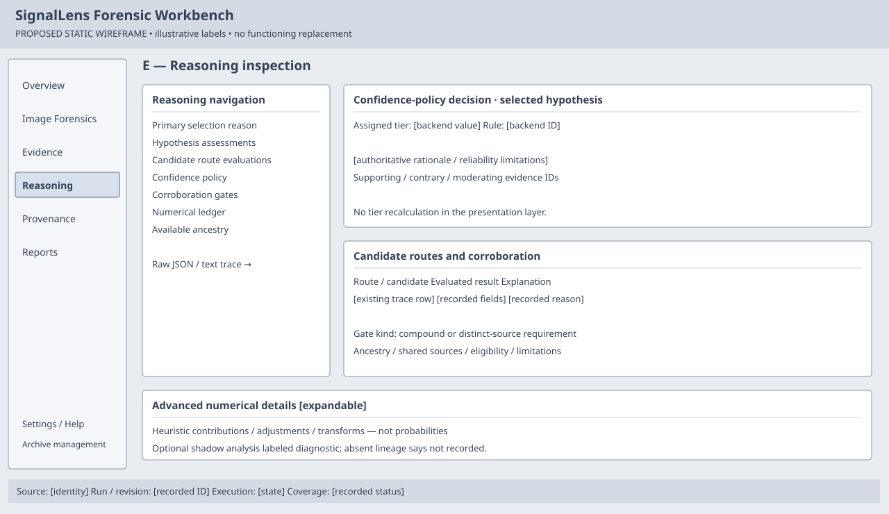
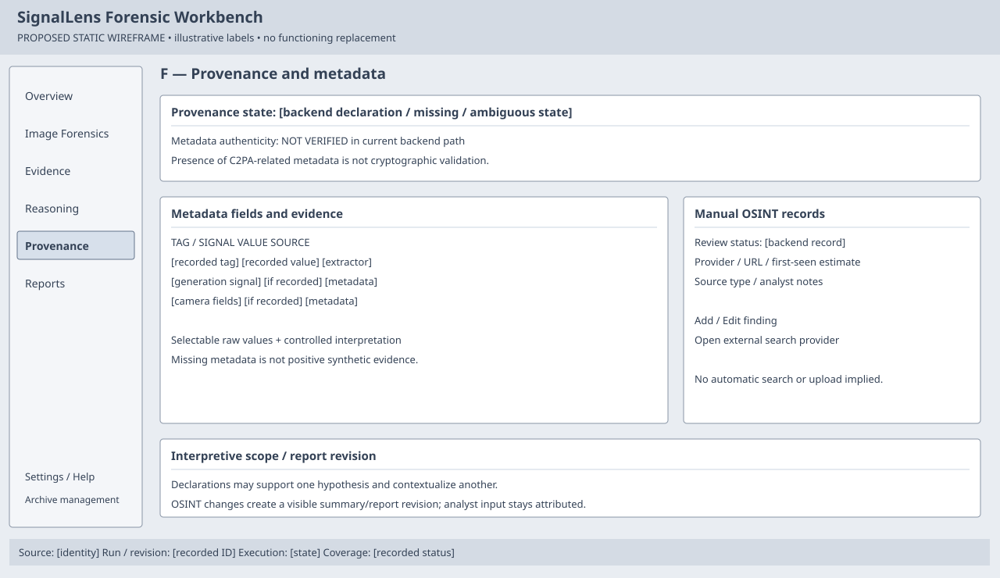

Proposed static concepts — UI-0 audit only. These six wireframes are not a functioning application. Bracketed labels are illustrative data slots, not forensic conclusions.

Standalone SVG · PNG preview





Design rationale: design concept. Actual UI screenshots are stored separately in ../screenshots/.